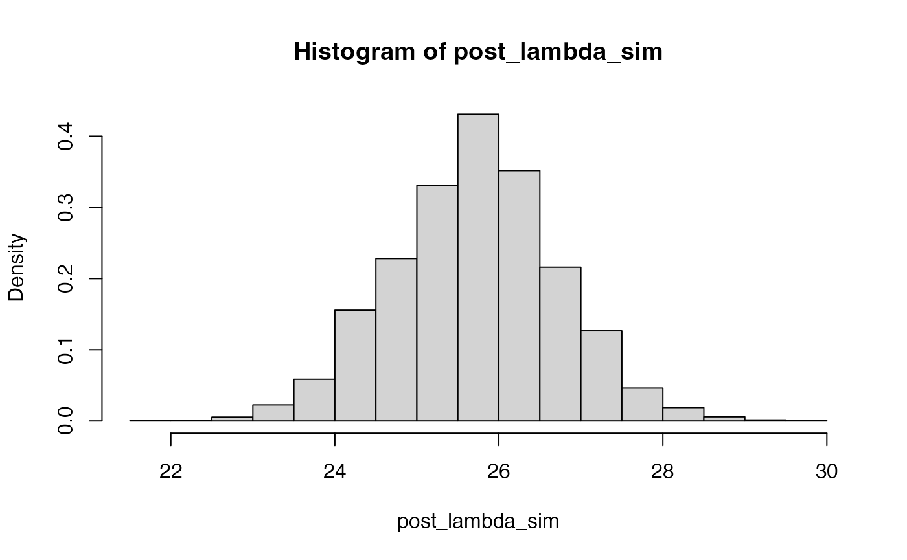

Introduction
In previous practicals you have used Bayesian models with conjugate priors where the posterior distribution can be easily worked out. In general, this is seldom the case and other approaches need to be considered. In particular, Importance Sampling and Markov Chain Monte Carlo (MCMC) methods can be used to draw samples from the posterior distribution that are in turn used to obtain estimates of the posterior mean and variance and other quantities of interest.
Importance Sampling
As described in the previous lecture, Importance Sampling (IS) is an algorithm to estimate some quantities of interest of a target distribution by sampling from a different (proposal) distribution and reweighting the samples using importance weights. In Bayesian inference, IS can be used to sample from the posterior distribution when the normalizing constant is not known because \[ \pi(\theta \mid \mathbf{y}) \propto L(\theta \mid \mathbf{y}) \pi(\theta), \] where \(\mathbf{y}\) represents the observed data, \(L(\theta \mid \mathbf{y})\) the likelihood function and \(\pi(\theta)\) the prior distribution on \(\theta\).
If \(g(\cdot)\) is a proposal distribution, and \(\{\theta^{(m)}\}_{m=1}^M\) are \(M\) samples from that distribution, then the importance weights are \[ w(\theta^{(m)}) = \frac{L(\theta^{(m)} \mid \mathbf{y})\,\pi(\theta^{(m)})} {g(\theta^{(m)})} . \] When the normalizing constant in the posterior distribution is not known, the importance weights are rescaled to sum to one. Note that this rescaling is done by the denominator in the expression at point 2 on slide 9/22 of the Numerical Approaches slides you have just seen. In practice, rescaling removes the need for the denominator and simplifies the calculations throughout (we do it once, rather than every time).
Hence, the posterior mean can be computed as \[ E\left(\theta \mid \mathbf{y}\right) = \mu = \int \theta\, \pi(\theta \mid \mathbf{y}) \mathop{d\theta} \simeq \sum_{m=1}^M \theta^{(m)}\, w(\theta^{(m)}) = \hat{\mu}. \] Similarly, the posterior variance can be computed as \[ \mbox{Var}\left(\theta \mid \mathbf{y}\right) = \sigma^2 = \int (\theta - \mu)^2\, \pi(\theta \mid \mathbf{y}) \mathop{d\theta} \simeq \sum_{m=1}^M (\theta^{(m)})^2\, w(\theta^{(m)}) - \hat{\mu}^2 . \]
The Metropolis-Hastings Algorithm
The Metropolis-Hastings (M-H) algorithm is a popular MCMC method to obtain samples from the posterior distribution of an ensemble of parameters. In the examples below we will only consider models with one parameter, but the M-H algorithm can be used on models with a large number of parameters.
The M-H algorithm works in a very simple way. At every step of the algorithm a new movement is proposed using a proposal distribution. This movement is accepted with a known probability, which implies that the movement can be rejected so that the algorithm stays at the same state in the current iteration.
Hence, in order to code the M-H algorithm for a set of parameters \(\theta\) we need to define:
- A function to draw observations from the proposal distribution, given its current state. This will be denoted by \(q(\cdot\mid\cdot)\), so that the density of a new proposal \(\theta^*\) given a current state \(\theta^{(m)}\) is given by \(q(\theta^*\mid\theta^{(m)})\).
From the Bayesian model, we already know:
A prior distribution on the parameters of interest, i.e., \(\pi(\theta)\).
The likelihood of the parameter \(\theta\) given the observed data \(\mathbf{y}\), i.e., \(L(\theta\mid\mathbf{y})\).
At step \(m\), a new value is drawn from \(q(\cdot\mid\theta^{(m)})\) and it is accepted with probability:
\[ \alpha = \min\left\{1, \frac{L(\theta^*\mid\mathbf{y})\,\pi(\theta^{*})\,q(\theta^{(m)} \mid\theta^{*})} {L(\theta^{(m)}\mid\mathbf{y})\,\pi(\theta^{(m)})\,q(\theta^{*} \mid\theta^{(m)})}\right\} \]
If the value is accepted, then the current state is set to the proposed value, i.e., \(\theta^{(m+1)} = \theta^{*}\). Otherwise we keep the previous value, so \(\theta^{(m+1)} = \theta^{(m)}\).
Example: Binomial-Beta Model
The first example that will be considered is based on the data set collected on the number of red M&M’s in tube \(i\) with \(n_i\) M&M’s. The number of red M&M’s obtained depends on the total number of M&M’s extracted and the actual proportion of red ones \(\theta\). Given the proportion \(\theta\), the number of red M&M’s obtained follows a Binomial distribution. Because \(\theta\) takes values between 0 and 1, a sensible choice for a prior is the Beta distribution.
The model can be stated as follows: \[ \begin{array}{rcl} Y_i \mid \theta & \sim & \text{Bi}(n_i,\, \theta)\\ \theta & \sim & \text{Be}(\alpha,\, \beta) \end{array} \] to allow for multiple tubes.
In particular, we will consider a vague uniform prior in the \([0,1]\) interval, which corresponds to \(\alpha=\beta=1\).
You can use the following data set for this exercise:
mmdata <- data.frame(MMs = c(20, 22, 24), red = c(5, 8, 9))These data reproduce different counts of red M&M’s in three
different tubes. Variable MMs records the total number of
M&M’s \(n_i\) in tube \(i\) and red the actual number
of red M&M’s (\(y_i\) in the
model).
Importance sampling
Although the posterior distribution is known in closed form, IS can be used to estimate the posterior mean and variance. Given that the parameter \(\theta\) is bounded, a uniform distribution in the interval \([0,1]\) will be used. This is probably not very efficient (as it is likely not to be close to the actual posterior) but it will provide a straightforward simulation strategy.
Next, importance weights are computed in two steps. First, the ratio between the likelihood times the prior and the density of the proposal distribution is computed. Secondly, weights are re-scaled to sum to one.
# Log-Likelihood (for each value of theta_sim)
loglik_binom <- sapply(theta_sim, function(theta) {
sum(dbinom(mmdata$red, mmdata$MMs, theta, log = TRUE))
})
# Log-weights: log-lik + log-prior - log-proposal_distribution
log_ww <- loglik_binom + dbeta(theta_sim, 1, 1, log = TRUE) - log(1)
# Re-scale weights to sum up to one
log_ww <- log_ww - max(log_ww)
ww <- exp(log_ww)
ww <- ww / sum(ww)The importance weights can be summarized using a histogram (see below). The distribution of weights shows that most samples are far from the regions of high posterior density.
hist(ww, xlab = "Importance weights")The posterior mean and variance can be computed as follows:
# Posterior mean
post_mean <- sum(theta_sim * ww)
post_mean ## [1] 0.3376749
# Posterior variance
post_var <- sum(theta_sim^2 * ww)- post_mean^2
post_var## [1] 0.003288748Finally, an estimate of the posterior density \(\pi(\theta \mid \mathbf{y})\) of the parameter can be obtained by using weighted kernel density estimation.
Aside: weighted kernel density estimation Standard kernel density estimation is a way of producing a non-parametric estimate of the distribution of a continuous quantity given a sample. A kernel function is selected (typically a Normal density), and one of these is placed centred on each sample point. The sum of these functions produces the kernel density estimate (after scaling - dividing by the number of sample points). A weighted kernel density estimate simply includes weights in the sum of the kernel functions. In both weighted and unweighted forms of kernel density estimation, the key parameter controlling the smoothness of the resulting density estimate is the bandwidth (equivalent to the standard deviation if using a Normal kernel function); larger values give smoother density estimates, and smaller values give noisier densities.

Note that the value of the bandwidth used (argument bw)
has been set manually to provide a sensible, smooth curve.
Similarly, a sample from the posterior distribution can be obtained by resampling the original values of theta with their corresponding weights.

Metropolis-Hastings
As stated above, the implementation of the M-H algorithm requires a proposal distribution to obtain new values of the parameter \(\theta\). Usually, the proposal distribution is defined so that the proposed movement depends on the current value. However, in this case we will use a uniform distribution between 0 and 1 as our proposal distribution.
First of all, we will define the proposal distribution, prior and likelihood of the model:
# Proposal distribution: sampling
rq <- function() {
runif(1)
}
# Proposal distribution: log-density
logdq <- function(x) {
dunif(x, log = TRUE)
}
# Prior distribution: Beta(1, 1), log-density
logprior <- function(theta) {
dbeta(theta, 1, 1, log = TRUE)
}
# Log-Likelihood
loglik <- function(y, theta, N) {
res <- sum(dbinom(y, N, theta, log = TRUE))
}Note that all densities and the likelihood are computed on the log-scale.
Next, an implementation of the M-H algorithm is as follows:
# Number of iterations
n.iter <- 40500
# Simulations of the parameter
theta <- rep(NA, n.iter)
# Initial value
theta[1] <- 0.5
# Data
y <- mmdata$red
N <- mmdata$MMs
for(i in 2:n.iter) {
new.theta <- rq()
# Log-Acceptance probability
logacc.prob <- loglik(y, new.theta, N) + logprior(new.theta) + logdq(theta[i - 1])
logacc.prob <- logacc.prob - loglik(y, theta[i - 1], N) - logprior(theta[i - 1]) -
logdq(new.theta)
logacc.prob <- min(0, logacc.prob) # Note that 0 = log(1)
if(log(runif(1)) < logacc.prob) {
# Accept
theta[i] <- new.theta
} else {
# Reject
theta[i] <- theta[i - 1]
}
}The simulations we have generated are not independent of one another; each is dependent on the previous one. This has two consequences: the chain is dependent on the initial, starting value of the parameter(s); and the sampling chain itself will exhibit autocorrelation.
For this reason, we will remove the first 500 iterations to reduce the dependence of the sampling on the starting value; and we will keep only every 10th simulation to reduce the autocorrelation in the sampled series. The 500 iterations we discard are known as the burn-in sample, and the process of keeping only every 10th value is called thinning.
After that, we will compute summary statistics and display a density of the simulations.
# Remove burn-in
theta <- theta[-c(1:500)]
# Thinning
theta <- theta[seq(1, length(theta), by = 10)]
# Summary statistics
summary(theta)## Min. 1st Qu. Median Mean 3rd Qu. Max.
## 0.1552 0.2984 0.3388 0.3394 0.3779 0.6046
par(mfrow = c(1, 2))
plot(theta, type = "l", main = "MCMC samples", ylab = expression(theta))
plot(density(theta), main = "Posterior density", xlab = expression(theta))
Exercises
Performance of the proposal distribution
The proposal distribution plays a crucial role in IS and it should be as close to the posterior as possible. As a way of measuring how good a proposal distribution is, it is possible to compute the effective sample size as follows:
\[ \text{ESS} = \frac{(\sum_{m=1}^M w(\theta^{(m)}))^2}{\sum_{m=1}^M w(\theta^{(m)})^2}. \]
-
Compute the effective sample size for the previous example. How is this related to the number of IS samples (
n_simulations)? -
Use a different proposal distribution and check how sampling weights, ESS and point estimates differ from those in the current example. For example, a \(\text{Be}(20,\, 10)\) will put more mass on high values of \(\theta\), unlike the actual posterior distribution. What differences do you find with the example presented here using a uniform proposal distribution? Why do you think that these differences appear?
Solution
n_simulations <- 10000 set.seed(12) theta_sim <- rbeta(n_simulations, 20, 10) loglik_binom <- sapply(theta_sim, function(theta) { sum(dbinom(mmdata$red, mmdata$MMs, theta, log = TRUE)) }) log_ww <- loglik_binom + dbeta(theta_sim, 1, 1, log = TRUE) - dbeta(theta_sim, 20, 10, log = TRUE) log_ww <- log_ww - max(log_ww) ww <- exp(log_ww) ww <- ww / sum(ww)hist(ww, xlab = "Importance weights")(post_mean <- sum(theta_sim * ww))## [1] 0.3848565(post_var <- sum(theta_sim^2 * ww)- post_mean^2)## [1] 0.001419052
ESS(ww)## [1] 11.94817n_simulations## [1] 10000
Sampling from the actual posterior
Use the posterior distribution (which for this particular case is known in a closed form) as the proposal distribution.
-
What is the distribution of the importance weights now?
Solution
n_simulations <- 10000 set.seed(12) theta_sim <- rbeta(n_simulations, sum(mmdata$red) + 1, sum(mmdata$MMs) -sum(mmdata$red) + 1) loglik_binom <- sapply(theta_sim, function(theta) { sum(dbinom(mmdata$red, mmdata$MMs, theta, log = TRUE)) }) log_ww <- loglik_binom + dbeta(theta_sim, 1, 1, log = TRUE) - dbeta(theta_sim, sum(mmdata$red) + 1, sum(mmdata$MMs) -sum(mmdata$red) + 1, log = TRUE) log_ww <- log_ww - max(log_ww) ww <- exp(log_ww) ww <- ww / sum(ww)hist(ww, xlab = "Importance weights")
(post_mean <- sum(theta_sim * ww))## [1] 0.337956(post_var <- sum(theta_sim^2 * ww)- post_mean^2)## [1] 0.003254075
-
Compute the effective sample size. How large is it? Why do you think this happens?
Non-conjugate prior
IS and M-H are algorithms that can be used to make inference about \(\theta\) when the posterior density of the parameter is not available in closed form. This is the case with models which have non-conjugate priors. As an exercise, try to obtain the posterior density of the same model with the following non-conjugate prior:
\[ \pi(\theta) \propto (1-\theta)^2,\quad \theta\in[0,1]. \]
This prior has the following shape:
curve((1-x)^2, xlab = expression(theta), ylab = NA, yaxt = 'n', bty = 'n')
The interpretation of this prior is that smaller values are favoured over higher values, i.e., our prior information is that the parameter is more likely to have values close to 0 than values close to 1.
Note that the prior is specified up to a normalising constant (which in this case is not difficult to compute). However, this constant is not needed to implement both the IS and M-H algorithms. In the case of IS, the constant will cancel when the weights are re-scaled to sum to one and in the case of the M-H algorithm the constant will cancel when the acceptance ratio is computed.
-
Use the IS algorithm to compute and plot the weights using this non-conjugate distribution, using them to estimate the posterior mean and variance. Finally, show the posterior density estimate.
Solution
n_simulations <- 10000 set.seed(12) theta_sim <- rbeta(n_simulations,20,10) loglik_binom <- sapply(theta_sim, function(theta) { sum(dbinom(mmdata$red, mmdata$MMs, theta, log = TRUE)) }) log_ww <- loglik_binom + 2*log(1-theta_sim) - dbeta(theta_sim, 20, 10, log = TRUE) log_ww <- log_ww - max(log_ww) ww <- exp(log_ww) ww <- ww / sum(ww)hist(ww, xlab = "Importance weights")
(post_mean <- sum(theta_sim * ww))## [1] 0.3803729(post_var <- sum(theta_sim^2 * ww)- post_mean^2)## [1] 0.00127375 -
Use the M-H algorithm to produce the posterior density estimate.
Solution
# Proposal distribution: sampling rq <- function() { runif(1) } # Proposal distribution: log-density logdq <- function(x) { dunif(x, log = TRUE) } # Prior distribution: (1-theta)^2, log-density logprior <- function(theta) { 2*log(1-theta) } # Log-Likelihood loglik <- function(y, theta, N) { res <- sum(dbinom(y, N, theta, log = TRUE)) }# Number of iterations n.iter <- 40500 # Simulations of the parameter theta <- rep(NA, n.iter) # Initial value theta[1] <- 0.5 # Data y <- mmdata$red N <- mmdata$MMs for(i in 2:n.iter) { new.theta <- rq() # Log-Acceptance probability logacc.prob <- loglik(y, new.theta, N) + logprior(new.theta) + logdq(theta[i - 1]) logacc.prob <- logacc.prob - loglik(y, theta[i - 1], N) - logprior(theta[i - 1]) - logdq(new.theta) logacc.prob <- min(0, logacc.prob) # Note that 0 = log(1) if(log(runif(1)) < logacc.prob) { # Accept theta[i] <- new.theta } else { # Reject theta[i] <- theta[i - 1] } }# Remove burn-in theta <- theta[-c(1:500)] # Thinning theta <- theta[seq(1, length(theta), by = 10)] # Summary statistics summary(theta)## Min. 1st Qu. Median Mean 3rd Qu. Max. ## 0.1456 0.2913 0.3288 0.3295 0.3649 0.5369par(mfrow = c(1, 2)) plot(theta, type = "l", main = "MCMC samples", ylab = expression(theta)) plot(density(theta), main = "Posterior density", xlab = expression(theta))
Example: Poisson-Gamma Model
The second example will be based on the Game of Thrones data set. Remember that this is made of the observed number of u’s on a page of a book of Game of Thrones. The model can be stated as:
\[ \begin{array}{rcl} y_i \mid \lambda & \sim & \text{Po}(\lambda)\\ \lambda & \sim & \text{Ga}(\alpha,\, \beta) \end{array} \]
In particular, the prior on \(\lambda\) will be a Gamma distribution with parameters \(0.01\) and \(0.01\), which is centred at 1 and has a small precision (i.e., large variance).
We will denote the observed values by y in the
R code. The data collected can be loaded with:
GoTdata <- data.frame(Us = c(25, 29, 27, 27, 25, 27, 22, 26, 27, 29, 23,
28, 25, 24, 22, 25, 23, 29, 23, 28, 21, 29,
28, 23, 28))
y <- GoTdata$UsImportance sampling
Now the parameter of interest is not bounded, so the proposal distribution needs to be chosen with care. We will use a log-Normal distribution with mean 3 and standard deviation equal to 0.5 in the log scale. This will ensure that all the sampled values are positive (because \(\lambda\) cannot take negative values) and that the sample values are reasonable (i.e., they are not too small or too large). Note that this proposal distribution has been chosen having in mind the problem at hand and that it may not work well with other problems.
Next, importance weights are computed in two steps, as in the previous example. Note that now the likelihood, prior and proposal distribution are different from the ones in the Binomial example.
# Log-Likelihood (for each value of lambda_sim)
loglik_pois <- sapply(lambda_sim, function(LAMBDA) {
sum(dpois(GoTdata$Us, LAMBDA, log = TRUE))
})
# Log-weights: log-lik + log-prior - log-proposal_distribution
log_ww <- loglik_pois + dgamma(lambda_sim, 0.01, 0.01, log = TRUE) - dlnorm(lambda_sim, 3, 0.5, log = TRUE)
# Re-scale weights to sum up to one
log_ww <- log_ww - max(log_ww)
ww <- exp(log_ww)
ww <- ww / sum(ww)The importance weights can be summarized using a histogram:
hist(ww, xlab = "Importance weights")
The posterior mean and variance can be computed as follows:
# Posterior mean
(post_mean <- sum(lambda_sim * ww))## [1] 25.71561
# Posterior variance
(post_var <- sum(lambda_sim^2 * ww)- post_mean^2)## [1] 0.9987383Finally, an estimate of the posterior density of the parameter can be obtained by using weighted kernel density estimation:

Note that the value of the bandwidth used (argument bw)
has been set manually to provide a realistically smooth density
function.
Similarly, a sample from the posterior distribution can be obtained by resampling the original values of \(\theta\) with their corresponding weights.
post_lambda_sim <- sample(lambda_sim, prob = ww, replace = TRUE)
hist(post_lambda_sim, freq = FALSE)
Metropolis-Hastings
Similarly to the previous example, we will set the proposal distribution, as the model has been fully defined above. In this case, the proposal distribution is a log-Normal distribution centred at the logarithm of the current value with precision \(100\).
# Proposal distribution: sampling
rq <- function(lambda) {
rlnorm(1, meanlog = log(lambda), sdlog = sqrt(1 / 100))
}
# Proposal distribution: log-density
logdq <- function(new.lambda, lambda) {
dlnorm(new.lambda, meanlog = log(lambda), sdlog = sqrt(1 / 100), log = TRUE)
}
# Prior distribution: Ga(0.01, 0.01)
logprior <- function(lambda) {
dgamma(lambda, 0.01, 0.01, log = TRUE)
}
# LogLikelihood
loglik <- function(y, lambda) {
res <- sum(dpois(y, lambda, log = TRUE))
}With these definitions we can actually use the same implementation of the M-H that we have used in the previous section.
# Number of iterations
n.iter <- 40500
# Simulations of the parameter
lambda <- rep(NA, n.iter)
# Initial value
lambda[1] <- 30
for(i in 2:n.iter) {
new.lambda <- rq(lambda[i - 1])
# Log-Acceptance probability
logacc.prob <- loglik(y, new.lambda) + logprior(new.lambda) +
logdq(lambda[i - 1], new.lambda)
logacc.prob <- logacc.prob - loglik(y, lambda[i - 1]) - logprior(lambda[i - 1]) -
logdq(new.lambda, lambda[i - 1])
logacc.prob <- min(0, logacc.prob)#0 = log(1)
if(log(runif(1)) < logacc.prob) {
# Accept
lambda[i] <- new.lambda
} else {
# Reject
lambda[i] <- lambda[i - 1]
}
}The same burn-in and thinning as in the Beta-Binomial example will be used. Furthermore, summary statistics and plots will be computed now:
# Remove burn-in
lambda <- lambda[-c(1:500)]
# Thinning
lambda <- lambda[seq(1, length(lambda), by = 10)]
# Summary statistics
summary(lambda)## Min. 1st Qu. Median Mean 3rd Qu. Max.
## 22.55 25.05 25.70 25.73 26.40 29.65
par(mfrow = c(1, 2))
plot(lambda, type = "l", main = "MCMC samples", ylab = expression(lambda))
plot(density(lambda), main = "Posterior density", xlab = expression(lambda))
Exercises
Performance of the proposal distribution
Similarly to the exercises in the example on Binomial data, you will now assess the impact of the proposal distribution on the inference process.
-
Compute the effective sample size for the previous example. How is this related to the number of IS samples (
n_simulations)? -
Use a different proposal distribution and check how sampling weights, ESS and point estimates differ from those in the current example. For example, a \(\text{Ga}(5,\, 0.1)\) will put a higher mass on values around 40, unlike the actual posterior distribution. What differences do you find with the example presented here using a uniform proposal distribution? Why do you think that these differences appear?
Solution
n_simulations <- 10000 set.seed(12) lambda_sim <- rgamma(n_simulations,5,0.1) loglik_pois <- sapply(lambda_sim, function(LAMBDA) { sum(dpois(GoTdata$Us, LAMBDA, log = TRUE)) }) log_ww <- loglik_pois + dgamma(lambda_sim, 0.01, 0.01, log = TRUE) - dgamma(lambda_sim, 5, 0.1, log=TRUE) log_ww <- log_ww - max(log_ww) ww <- exp(log_ww) ww <- ww / sum(ww)hist(ww, xlab = "Importance weights")
post_mean <- sum(lambda_sim * ww) post_mean## [1] 25.70199post_var <- sum(lambda_sim^2 * ww)- post_mean^2 post_var## [1] 1.039709
ESS(ww)## [1] 445.456n_simulations## [1] 10000
Sampling from the actual posterior
Use the posterior distribution (which for this particular case is known in a closed form) as the proposal distribution.
-
What is the distribution of the importance weights now?
Solution
n_simulations <- 10000 set.seed(12) lambda_sim <- rgamma(n_simulations, sum(GoTdata$Us) + 0.01, length(GoTdata$Us) + 0.01) loglik_pois <- sapply(lambda_sim, function(LAMBDA) { sum(dpois(GoTdata$Us, LAMBDA, log = TRUE)) }) log_ww <- loglik_pois + dgamma(lambda_sim, 0.01, 0.01, log = TRUE) - dgamma(lambda_sim, sum(GoTdata$Us) + 0.01, length(GoTdata$Us) + 0.01, log=TRUE) log_ww <- log_ww - max(log_ww) ww <- exp(log_ww) ww <- ww / sum(ww)hist(ww, xlab = "Importance weights")
(post_mean <- sum(lambda_sim * ww))## [1] 25.71701(post_var <- sum(lambda_sim^2 * ww)- post_mean^2)## [1] 1.043852
-
Compute the effective sample size. How large is it? Why do you think this happens?
Non-conjugate prior
Just as in the Binomial example, non-conjugate priors can be used for the \(\lambda\) parameter. In this case, given that \(\lambda\) is positive, care must be taken when choosing the prior. For this exercise, try to use a log-Normal prior with mean 4 and standard deviation 1. This will provide a prior of \(\lambda\) as seen in the next plot:
curve(
dlnorm(x, 4, 1),
xlim = c(0, 600), n = 1e3,
xlab = expression(lambda), ylab = NA,
yaxt = 'n', bty = 'n'
)Hence, with this prior small values of the average number of u’s are given a higher prior density.
Parameter estimates for a model with this prior can be obtained using IS and M-H algorithms.
-
Fit the model with the non-conjugate prior using the IS algorithm.
Solution
# Log-Likelihood (for each value of lambda_sim) loglik_pois <- sapply(lambda_sim, function(LAMBDA) { sum(dpois(GoTdata$Us, LAMBDA, log = TRUE)) }) # Log-weights: log-lik + log-prior - log-proposal_distribution log_ww <- loglik_pois + dlnorm(lambda_sim, 4, 1, log = TRUE) - dlnorm(lambda_sim, 3, 0.5, log = TRUE) # Re-scale weights to sum up to one log_ww <- log_ww - max(log_ww) ww <- exp(log_ww) ww <- ww / sum(ww)hist(ww, xlab = "Importance weights")# Posterior mean (post_mean <- sum(lambda_sim * ww))## [1] 25.75447# Posterior variance (post_var <- sum(lambda_sim^2 * ww)- post_mean^2)## [1] 0.9968708
## [1] 938.3653n_simulations## [1] 10000 -
Fit the model with the non-conjugate prior using the M-H algorithm.
Solution
# Proposal distribution: sampling rq <- function(lambda) { rlnorm(1, meanlog = log(lambda), sdlog = sqrt(1 / 100)) } # Proposal distribution: log-density logdq <- function(new.lambda, lambda) { dlnorm(new.lambda, meanlog = log(lambda), sdlog = sqrt(1 / 100), log = TRUE) } # Prior distribution: Log Normal(4,1) logprior <- function(lambda) { dlnorm(lambda_sim, 4, 1, log = TRUE) } # LogLikelihood loglik <- function(y, lambda) { res <- sum(dpois(y, lambda, log = TRUE)) }# Number of iterations n.iter <- 40500 # Simulations of the parameter lambda <- rep(NA, n.iter) # Initial value lambda[1] <- 30 for(i in 2:n.iter) { new.lambda <- rq(lambda[i - 1]) # Log-Acceptance probability logacc.prob <- loglik(y, new.lambda) + logprior(new.lambda) + logdq(lambda[i - 1], new.lambda) logacc.prob <- logacc.prob - loglik(y, lambda[i - 1]) - logprior(lambda[i - 1]) - logdq(new.lambda, lambda[i - 1]) logacc.prob <- min(0, logacc.prob)#0 = log(1) if(log(runif(1)) < logacc.prob) { # Accept lambda[i] <- new.lambda } else { # Reject lambda[i] <- lambda[i - 1] } }# Remove burn-in lambda <- lambda[-c(1:500)] # Thinning lambda <- lambda[seq(1, length(lambda), by = 10)] # Summary statistics summary(lambda)## Min. 1st Qu. Median Mean 3rd Qu. Max. ## 22.29 25.07 25.75 25.75 26.42 29.36par(mfrow = c(1, 2)) plot(lambda, type = "l", main = "MCMC samples", ylab = expression(lambda)) plot(density(lambda), main = "Posterior density", xlab = expression(lambda))
Gibbs Sampling
As we have seen in the theory session, Gibbs Sampling is an MCMC method which allows us to estimate one parameter at a time. This is very useful for models which have lots of parameters, as in a sense it reduces a very large multidimensional inference problem to a set of single dimension problems.
To recap, in order to generate a random sample from the joint density \(g\left(\mathbf{\theta}\right)= g\left(\theta_1,\theta_2,\ldots,\theta_D\right)\) for a model with \(d\) parameters, we use the following algorithm:
- Start with an initial set \(\mathbf{\theta}^{(0)}= \left(\theta_1^{(0)},\theta_2^{(0)},\ldots,\theta_D^{(0)}\right)\)
- Generate \(\theta_1^{(1)}\) from the conditional distribution \(\theta_1 \mid \left(\theta_2^{(0)},\ldots,\theta_D^{(0)}\right)\)
- Generate \(\theta_2^{(1)}\) from the conditional distribution \(\theta_2 \mid \left(\theta_1^{(1)},\theta_3^{(0)},\ldots,\theta_D^{(0)}\right)\)
- \(\quad\quad\cdots\)
- Generate \(\theta_D^{(1)}\) from the conditional distribution \(\theta_D \mid \left(\theta_1^{(1)},\theta_2^{(1)},\ldots,\theta_{D-1}^{(1)}\right)\)
- Iterate from Step 2.
As with Metropolis-Hastings, in Gibbs Sampling we typically discard the initial simulations (the burn-in period), reducing the dependence on the initial set of parameter values.
As with the other MCMC algorithms, the resulting simulations approximate a random sample from the posterior distribution.
Example: Simple Linear Regression
We will illustrate the use of Gibbs Sampling on a simple linear regression model. Recall that we saw yesterday that we can obtain an analytical solution for a Bayesian linear regression, but that more complex models require a simulation approach.
The approach we take here for Gibbs Sampling on a simple linear regression model is very easily generalised to more complex models, the key is that whatever your model looks like, you update one parameter at a time, using the conditional distribution of that parameter given the current values of all the other parameters.
The simple linear regression model we will analyse here is a reduced version of the general linear regression model we saw yesterday: \[ Y_i = \beta_0+\beta_1x_i+\epsilon_i \] for response variable \(\mathbf{Y}=\left(Y_1,Y_2,\ldots,Y_n\right)\), explanatory variable \(\mathbf{x}=\left(x_1,x_2,\ldots,x_n\right)\) and residual vector \(\mathbf{\epsilon}= \left(\epsilon_1,\epsilon_2,\ldots,\epsilon_n\right)\) for a sample of size \(n\), where \(\beta_0\) is the regression intercept, \(\beta_1\) is the regression slope, and where the \(\epsilon_i\) are independent with \(\epsilon_i\sim \textrm{N}\left(0,\sigma^2\right)\) \(\forall i=1,2,\ldots,n\). For convenience, we refer to the combined set of \(\mathbf{Y}\) and \(\mathbf{x}\) data as \(\mathcal{D}\). We also define \(\hat{\mathbf{y}}\) to be the fitted response vector (i.e., \(\hat{y}_i = \beta_0 + \beta_1 x_i\) from the regression equation) using the current values of the parameters \(\beta_0\), \(\beta_1\) and precision \(\tau = 1\) (remember that \(\tau=\frac{1}{\sigma^2}\)) from the Gibbs Sampling simulations.
For Bayesian inference, it is simpler to work with precisions \(\tau\) rather than with variances \(\sigma^2\). Given priors \[ \begin{align*} \pi(\tau) &= \textrm{Ga}\left(\alpha, \beta\right), \\ \pi(\beta_0) &= \textrm{N}\left(\mu_{\beta_0}, \tau_{\beta_0}\right), \quad\textrm{and} \\ \pi(\beta_1) &= \textrm{N}\left(\mu_{\beta_1}, \tau_{\beta_1}\right) \end{align*} \] then by combining with the likelihood we can derive the full conditional distributions for each parameter. For \(\tau\), we have \[ \begin{align*} \pi\left(\tau|\mathcal{D}, \beta_0, \beta_1\right) &\propto \pi(\tau)\prod_{i=1}^nL\left(y_i|\hat{y_i}\right), \\ &= \tau^{\alpha-1}e^{-\beta\tau} \tau^{\frac{n}{2}}\exp\left\{- \frac{\tau}{2}\sum_{i=1}^n(y_i-\hat{y_i})^2\right\}, \\ &= \tau^{\alpha-1 + \frac{n}{2}}\exp\left\{-\beta\tau- \frac{\tau}{2}\sum_{i=1}^n(y_i-\hat{y_i})^2\right\},\\ \textrm{so} \quad \tau|\mathcal{D}, \beta_0, \beta_1 &\sim \textrm{Ga}\left(\alpha+\frac{n}{2}, \beta +\frac{1}{2}\sum_{i=1}^n(y_i-\hat{y_i})^2\right). \end{align*} \] For \(\beta_0\) we will need to expand \(\hat{y}_i=\beta_0+\beta_1x_i\), and then we have \[ \begin{align*} p(\beta_0|\mathcal{D}, \beta_1, \tau) &\propto \pi(\beta_0)\prod_{i=1}^nL\left(y_i|\hat{y_i}\right), \\ &= \tau_{\beta_0}^{\frac{1}{2}}\exp\left\{- \frac{\tau_{\beta_0}}{2}(\beta_0-\mu_{\beta_0})^2\right\}\tau^\frac{n}{2} \exp\left\{-\frac{\tau}{2}\sum_{i=1}^n(y_i-\hat{y_i})^2\right\}, \\ &\propto \exp\left\{-\frac{\tau_{\beta_0}}{2}(\beta_0-\mu_{\beta_0})^2- \frac{\tau}{2}\sum_{i=1}^n(y_i-\beta_0-x_i \beta_1)^2\right\}, \\ &= \exp \left\{ -\frac{1}{2}\left(\beta_0^2(\tau_{\beta_0} + n\tau) + \beta_0\left(-2\tau_{\beta_0}\mu_{\beta_0} - 2\tau\sum_{i=1}^n (y_i - x_i\beta_1)\right) \right) + C \right\}, \\ \textrm{so} \quad \beta_0|\mathcal{D}, \beta_1, \tau &\sim \mathcal{N}\left((\tau_{\beta_0} + n\tau)^{-1} \left(\tau_{\beta_0}\mu_{\beta_0} + \tau\sum_{i=1}^n (y_i - x_i\beta_1)\right), \tau_{\beta_0} + n\tau\right). \end{align*} \]
In the above, \(C\) represents a quantity that is constant with respect to \(\beta_0\) and hence can be ignored. Finally, for \(\beta_1\) we have \[ \begin{align*} p(\beta_1|\mathcal{D}, \beta_0, \tau) &\propto \pi(\beta_1)\prod_{i=1}^nL\left(y_i|\hat{y_i}\right), \\ &= \tau_{\beta_1}^{\frac{1}{2}}\exp\left\{- \frac{\tau_{\beta_1}}{2}(\beta_1-\mu_{\beta_1})^2\right\}\tau^\frac{n}{2} \exp\left\{-\frac{\tau}{2}\sum_{i=1}^n(y_i-\hat{y_i})^2\right\}, \\ &\propto \exp\left\{-\frac{\tau_{\beta_1}}{2}(\beta_1-\mu_{\beta_1})^2- \frac{\tau}{2}\sum_{i=1}^n(y_i-\beta_0-x_i \beta_1)^2\right\}, \\ &= \exp \left\{ -\frac{1}{2}\left(\beta_1^2\left(\tau_{\beta_1} + \tau\sum_{i=1}^n x_i^2\right) + \beta_1\left(-2\tau_{\beta_1}\mu_{\beta_1} - 2\tau\sum_{i=1}^n (y_i - \beta_0)x_i\right) \right) + C \right\}, \\ \textrm{so} \quad \beta_1|\mathcal{D}, \beta_0, \tau &\sim \textrm{N}\left((\tau_{\beta_1} + \tau\sum_{i=1}^n x_i^2)^{-1} \left(\tau_{\beta_1}\mu_{\beta_1} + \tau\sum_{i=1}^n (y_i - \beta_0)x_i\right), \tau_{\beta_1} + \tau\sum_{i=1}^n x_i^2\right). \end{align*} \] This gives us an easy way to run Gibbs Sampling for linear regression; we have standard distributions as full conditionals and there are standard functions in R to obtain the simulations. We shall do this now for an example in ecology, looking at the relationship between water pollution and mayfly size - the data come from the book Statistics for Ecologists Using R and Excel 2nd edition by Mark Gardener (ISBN 9781784271398), see the publisher’s webpage.
The data are as follows:
length- the length of a mayfly in mm;BOD- biological oxygen demand in mg of oxygen per litre, effectively a measure of organic pollution (since more organic pollution requires more oxygen to break it down).
The data can be read into R:
# Read in data
BOD <- c(200,180,135,120,110,120,95,168,180,195,158,145,140,145,165,187,
190,157,90,235,200,55,87,97,95)
mayfly.length <- c(20,21,22,23,21,20,19,16,15,14,21,21,21,20,19,18,17,19,21,13,
16,25,24,23,22)
# Create data frame for the Gibbs Sampling, needs x and y
Data <- data.frame(x=BOD,y=mayfly.length)We provide here some simple functions for running the analysis by
Gibbs Sampling, using the full conditionals derived above. The functions
assume you have a data frame with two columns, the response
y and the covariate x.
# Function to update tau, the precision
sample_tau <- function(data, beta0, beta1, alphatau, betatau) {
rgamma(1,
shape = alphatau+ nrow(data) / 2,
rate = betatau+ 0.5 * sum((data$y - (beta0 + data$x*beta1))^2)
)
}
# Function to update beta0, the regression intercept
sample_beta0 <- function(data, beta1, tau, mu0, tau0) {
prec <- tau0 + tau * nrow(data)
mean <- (tau0*mu0 + tau * sum(data$y - data$x*beta1)) / prec
rnorm(1, mean = mean, sd = 1 / sqrt(prec))
}
# Function to update beta1, the regression slope
sample_beta1 <- function(data, beta0, tau, mu1, tau1) {
prec <- tau1 + tau * sum(data$x * data$x)
mean <- (tau1*mu1 + tau * sum((data$y - beta0) * data$x)) / prec
rnorm(1, mean = mean, sd = 1 / sqrt(prec))
}
# Function to run the Gibbs Sampling, where you specify the number of
# simulations `m`, the starting values for each of the three regression
# parameters (`tau_start` etc), and the parameters for the prior
# distributions of tau, beta0 and beta1
gibbs_sample <- function(data,
tau_start,
beta0_start,
beta1_start,
m,
alpha_tau,
beta_tau,
mu_beta0,
tau_beta0,
mu_beta1,
tau_beta1) {
tau <- numeric(m)
beta0 <- numeric(m)
beta1 <- numeric(m)
tau[1] <- tau_start
beta0[1] <- beta0_start
beta1[1] <- beta1_start
for (i in 2:m) {
tau[i] <-
sample_tau(data, beta0[i-1], beta1[i-1], alpha_tau, beta_tau)
beta0[i] <-
sample_beta0(data, beta1[i-1], tau[i], mu_beta0, tau_beta0)
beta1[i] <-
sample_beta1(data, beta0[i], tau[i], mu_beta1, tau_beta1)
}
Iteration <- 1:m
data.frame(Iteration,beta0,beta1,tau)
}Exercises
We will use Gibbs Sampling to fit a Bayesian Linear Regression model to the mayfly data. We will use the following prior distributions for the regression parameters: \[ \begin{align*} \pi(\tau) &= \textrm{Ga}\left(1, 1\right), \\ \pi(\beta_0) &= \textrm{N}\left(0, 0.0001\right), \quad\textrm{and} \\ \pi(\beta_1) &= \textrm{N}\left(0, 0.0001\right). \end{align*} \] We will set the initial values of all parameters to 1, i.e. \(\beta_0^{(0)}=\beta_1^{(0)}=\tau^{(0)}=1\).
Data exploration
-
Investigate the data to see whether a linear regression model would be sensible. [Hint: a scatterplot and a correlation coefficient could be helpful.]
Solution
# Scatterplot plot(BOD,mayfly.length)# Correlation with hypothesis test cor.test(BOD,mayfly.length)## ## Pearson's product-moment correlation ## ## data: BOD and mayfly.length ## t = -6.52, df = 23, p-value = 1.185e-06 ## alternative hypothesis: true correlation is not equal to 0 ## 95 percent confidence interval: ## -0.9107816 -0.6020516 ## sample estimates: ## cor ## -0.8055507 -
Run a frequentist simple linear regression using the
lmfunction in R; this will be useful for comparison with our Bayesian analysis.Solution
## ## Call: ## lm(formula = mayfly.length ~ BOD, data = Data) ## ## Residuals: ## Min 1Q Median 3Q Max ## -3.453 -1.073 0.307 1.105 3.343 ## ## Coefficients: ## Estimate Std. Error t value Pr(>|t|) ## (Intercept) 27.697314 1.290822 21.46 < 2e-16 *** ## BOD -0.055202 0.008467 -6.52 1.18e-06 *** ## --- ## Signif. codes: 0 '***' 0.001 '**' 0.01 '*' 0.05 '.' 0.1 ' ' 1 ## ## Residual standard error: 1.865 on 23 degrees of freedom ## Multiple R-squared: 0.6489, Adjusted R-squared: 0.6336 ## F-statistic: 42.51 on 1 and 23 DF, p-value: 1.185e-06
Running the Gibbs Sampler
-
Use the code above to fit a Bayesian simple linear regression using
lengthas the response variable. Ensure you have a burn-in period so that the initial simulations are discarded. Use the output fromgibbs_sampleto estimate the regression parameters (with uncertainty measures). Also plot the estimates of the posterior distributions.Solution
# Bayesian Linear Regression using a Gibbs Sampler # Set the number of iterations of the Gibbs Sampler - including how many to # discard as the burn-in m.burnin <- 500 m.keep <- 1000 m <- m.burnin + m.keep # Obtain the samples results1 <- gibbs_sample(Data,1,1,1,m,1,1,0,0.0001,0,0.0001) # Remove the burn-in results1 <- results1[-(1:m.burnin),] # Add variance and standard deviation columns results1$Variance <- 1/results1$tau results1$StdDev <- sqrt(results1$Variance) # Estimates are the column means apply(results1[,-1],2,mean)## beta0 beta1 tau Variance StdDev ## 27.77301003 -0.05571146 0.30944947 3.52034745 1.85594561# Also look at uncertainty apply(results1[,-1],2,sd)## beta0 beta1 tau Variance StdDev ## 1.152484700 0.007595627 0.091067198 1.070075805 0.275479998## beta0 beta1 tau Variance StdDev ## 2.5% 25.40381 -0.07037335 0.1610291 1.976311 1.405813 ## 97.5% 30.02607 -0.04092882 0.5059932 6.210072 2.492001# Kernel density plots for beta0, beta1 and the residual stanard deviation plot(density(results1$beta0, bw = 0.5), main = "Posterior density for beta0")


-
Use the function
ts.plot()to view the autocorrelation in the Gibbs sampling simulation chain. Is there any visual evidence of autocorrelation, or do the samples look independent? How do the results compare with the frequentist output?

Reducing the autocorrelation by mean-centering the covariate
-
One method for reducing the autocorrelation in the sampling chains for regression parameters is to mean centre the covariate(s); this works because it reduces any dependence between the regression intercept and slope(s). Do this for the current example, noting that you will need to make a correction on the estimate of the regression intercept afterwards.
Solution
# Mean-centre the x covariate DataC <- Data meanx <- mean(DataC$x) DataC$x <- DataC$x - meanx # Bayesian Linear Regression using a Gibbs Sampler # Set the number of iterations of the Gibbs Sampler - including how many to # discard as the burn-in m.burnin <- 500 m.keep <- 1000 m <- m.burnin + m.keep # Obtain the samples results2 <- gibbs_sample(DataC, 1, 1, 1, m, 1, 1, 0, 0.0001, 0, 0.0001) # Remove the burn-in results2 <- results2[-(1:m.burnin), ] # Correct the effect of the mean-centering on the intercept results2$beta0 <- results2$beta0 - meanx * results2$beta1 # Add variance and standard deviation columns results2$Variance <- 1 / results2$tau results2$StdDev <- sqrt(results2$Variance) # Estimates are the column means apply(results2[, -1], 2, mean)## beta0 beta1 tau Variance StdDev ## 27.73399395 -0.05550429 0.30162488 3.60895902 1.87850921# Also look at uncertainty apply(results2[, -1], 2, sd)## beta0 beta1 tau Variance StdDev ## 1.341309629 0.008768635 0.084661274 1.141747061 0.283270929## beta0 beta1 tau Variance StdDev ## 2.5% 25.02776 -0.07186434 0.1520312 2.112600 1.453478 ## 97.5% 30.29086 -0.03799052 0.4733507 6.577602 2.564683# Kernel density plots for beta0, beta1 and the residual standard # deviation plot(density(results2$beta0, bw = 0.5), main = "Posterior density for beta0")


# Plot sampled series ts.plot(results2$beta0, ylab = "beta0", xlab = "Iteration")ts.plot(results2$beta1, ylab = "beta1", xlab = "Iteration")ts.plot(results2$StdDev, ylab = "sigma", xlab = "Iteration")